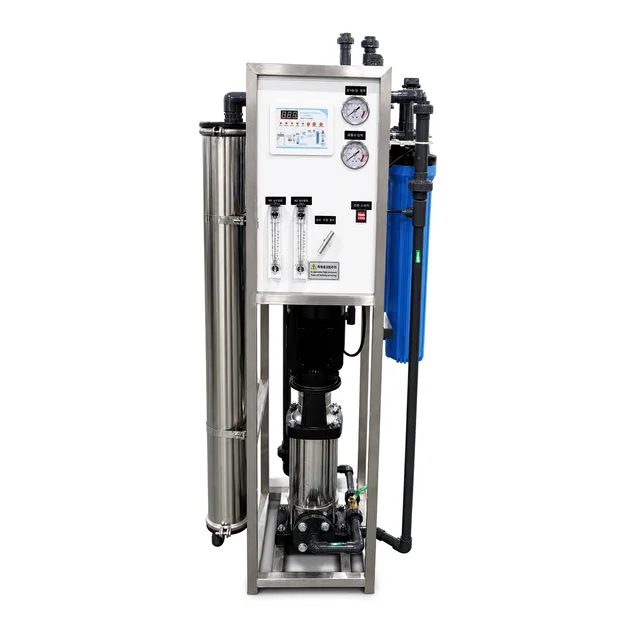

SUS304 рамасындагы мобилдүү тескери осмос орнотмосу, 250–500 л/саат
SUS304 рамасындагы 250–500 л/саат мобилдүү тескери осмос орнотмосу: эки Vontron 4040 мембранасы, 20 дюймдук алдын ала чыпкалар, TDS көзөмөлү жана 220 В варианты.
Конфигурацияны көрүү